IceCube Ray Tracing
Collaboration Statement:
Under penalty of academic dishonesty (as outlined in RRR)
my digital signature below verifies that the following is true:
That all images in this writeup were generated directly by my solution code
or provided by the course staff (exception: art contest submissions
may pass through intermediary software like GIMP)
That no other student has viewed my writeup explanations
or my writeup images
That my solution code is my own work; particularly that
my solution was not copied from any other
student's solution code, and that no other student
copied their solution directly code from me
That I did not discuss assignment specifics or view
the solution code of any other student besides that of my (optional) partner
That I have followed all other course collaboration
and course plagiarism policies as written on the course website.
Beiqi Zou (bzou)
Collaborated with: PARTNER NAME HERE (partner-netid-here)
- (1.0) Trace Ray and Calculate Color
- (2.0) Triangle
- (2.0) Sphere
- (2.5) Box
- (2.0) Cylinder
- (3.0) Cone
- (1.0) Shadows
- (3.0) Soft shadows
- (2.0) Transmission
- (1.0) Checkerboard
- (1.5) Phong material
- (1.5) Special material
- (1.0) Custom Scene
- (2.0) Animation
- (0-5) Technical Extensions
- (1.0) Art Contest
TraceRay
For the first part of the assignment, I followed the provided
instructions to complete the traceRay and calculateColor
functions.
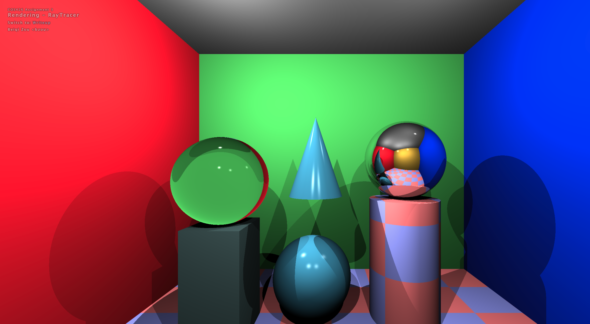
Triangle
(Your description of your implementation of Triangle goes here...)
The first step is to calculate the surface equation P*N + d = 0. First I calculated surface normal of a triangle given three vertices. Bascially it's the vector product of two edges of that triangle. Hence I created a function called "findSurfaceNormal" given three vertices as inputs, where it first calculated edge vectors and then do the cross product. Then we need to determine the distance d. The distance is simply the projection/dot product between the face normal and one point/vertex on the surface. After we find the surface equation, we can use the function "findIntersectionWithPlane" to determine the length and intersection point. Then we need to check whether the intersection point is in the triangle by using the second method mentioned in the lecture slides (calculating cross products).
Sphere
(Your description of your implementation of Sphere goes here...)
I followed the method mentioned in the slides. After calculating the intersection point, I used N = (P-O)/||P-O|| to find the face normal.
Box
(Your description of your implementation of Box goes here...)
The faces of a box can be determined using face normals and vertices. Since it's an axis-aligned box, there are three face normals (0, 0, 1), (0, 1, 0) and (1, 0, 0), where each of the face normal can corresponds to two vertices pmin and pmax. Hence it can form a box with six faces. Then for each face we can use "findIntersectionWithPlane" to determine the intersection point and length. Then we check whether the intersection point is in the box by subtracting pmin, and then check whether it's in the box length range. If the point is in the box, then we use "chooseCloserIntersection" to find the closest intersection.
Cylinder
(Your description of your implementation of Cylinder goes here...)
I followed the steps in the assignment specification. After calculating a, b, and c, we can find two intersecting points. Then we need to drop non-positive length, and select the closer one. We can find apex using [center + axis * len]. And find the location of intersection point by using "rayGetOffset". If the two conditions in the specification hold, we could find the normal by using the equations in the following image.
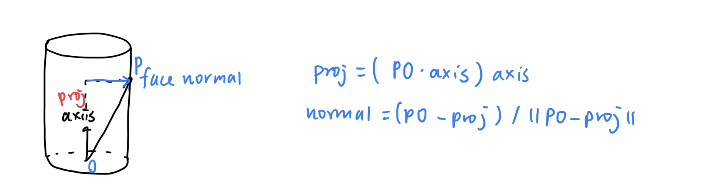
For getIntersectDisc function, we can use findIntersectionWithPlane, and then check whether it's in the circle range. By calculating the dot product between norm and center, we could find the distance of the plane.
Cone
(Your description of your implementation of Cone goes here...)
First follow the steps in assignment specification to calculate a, b, and c. Then we can find two intersection points. Similarly to cylinder, we perform some checks such as positive checking, in range checking, validations, then we find the closest intersection point. Determine the normal using the steps in the image.
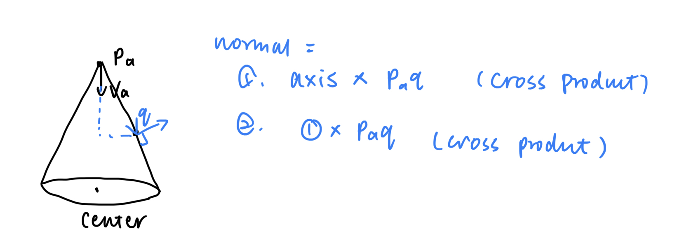
Shadows
(Your description of your implementation of Shadows goes here...)
First create a ray, where the ray's origin equals to pos and the direction is normalize(lightVec). We can use rayIntersectScene to find the intersection point of this lightVec to the object. Then we could check whether length(lightVec) > the distance to the intersection point. If so, then this point is in shadow. Otherwise it's not.
Soft shadows
(Your description of your implementation of Soft shadows goes here...)
Left figure shows how to generate offsets, right figure shows the idea of soft shadow.
I used a double for loop to loop through all the points. For example, for a point (1/N, 0), we can apply offsets in range [0, 1/N]. After getting x and y, we convert x and y using sphere coordinates (follow the equtaions in the link given). Then we can obtain the sample. By calling pointInShadow function to determine whether a lightVec is in shadow, we create a variable to count the number of light vector that are not in shadow. Finally we return the fraction of light that is not in shadow.
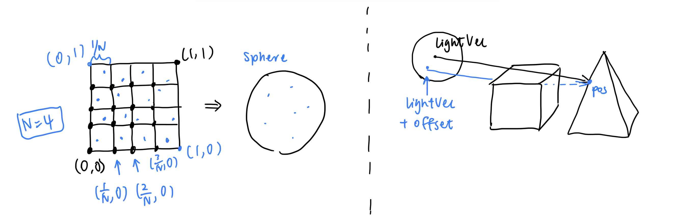
N = 25:
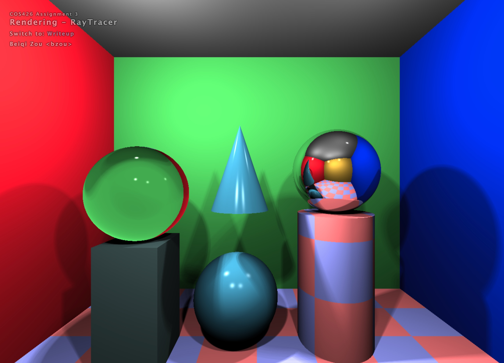
Transmission
(Your description of your implementation of Transmission goes here...)
T = (eta * cos(theta_i) - cos(theta_r))N - eta * L
We can obtain theta_i by calculating the dot product between direction and normal vector. By snell's law, we know that sin(theta_r) = eta * sin(theta_i). Then we can obtain both cos(theta_i) and cos(theta_r). L is the direction given. During coding, we need to reverse the above equation by multiplying -1.
Checkerboard
(Your description of your implementation of Checkerboard goes here...)
We only need to check whether the sum of location is odd or even. If it's even, the block is color1; else the block is color2. By multiplying a scaling factor, we can adjust the checkerboard size.
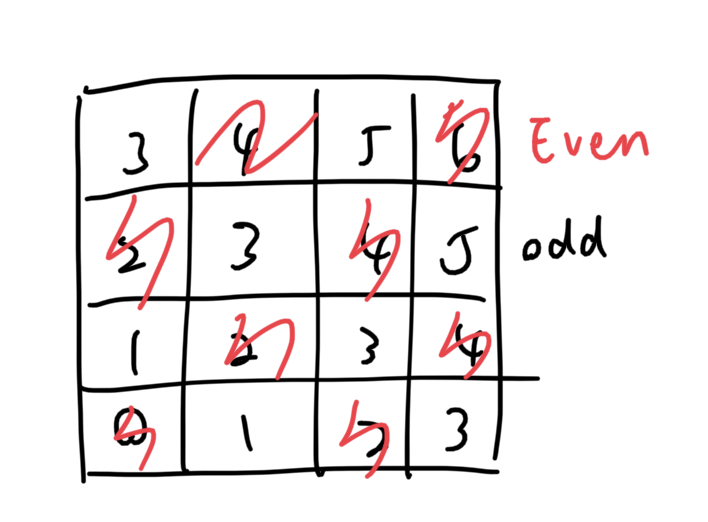
Phong material
(Your description of your implementation of Phong material goes here...)
Phong model has the following equation:
I_s = K_s (V * R)^n I_L
We can obtain R by using reflect() function provided, since it's the reflection of L w.r.t N. Note that we need to apply -1 to the reflected result to get the correct direction. Then the intensity is the dot product of eye vector and R, its power is mat.shiness. By multiplying light.intensity divided by attenuation, we can get the result.
Special material
(Your description of your implementation of Special material goes here...)
I followed the steps here: https://www.shadertoy.com/view/Msf3WH.
I set the color using: vec3 col = vec3(rand1 * n, rand2 * n, n), where n is the noise, rand1 and rand2 are random float in range [0, 1].
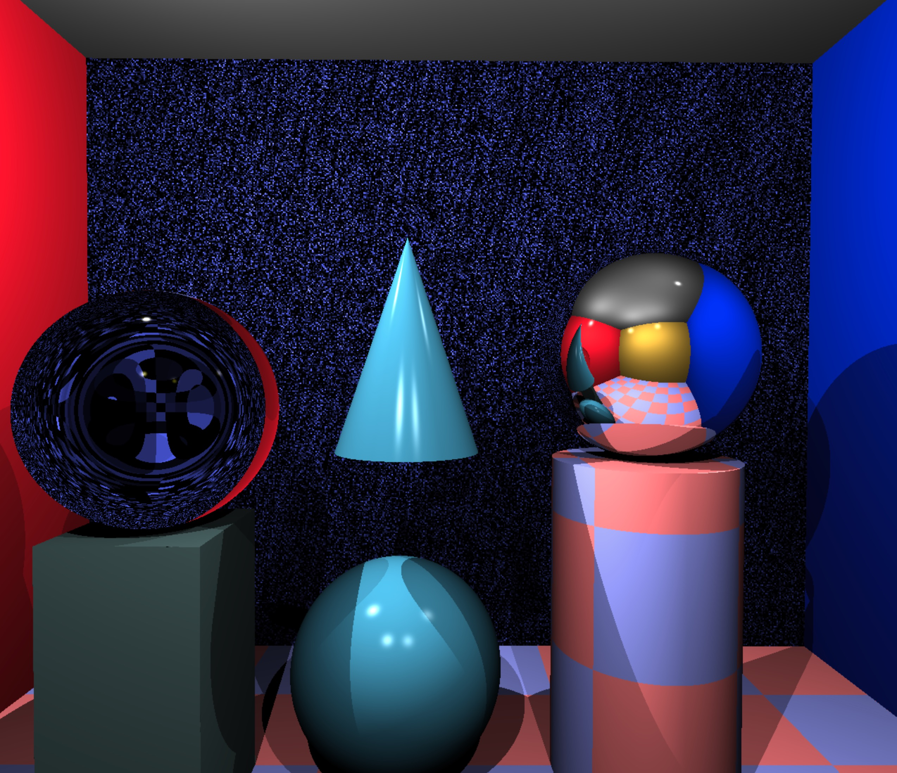
Custom Scene
(Your description of your implementation of Custom Scene goes here...)
Animation
(Your description of your implementation of Animation goes here...)
I used the code here: https://thebookofshaders.com/13/. Basically it uses fBm to warp a space of a fBm by using the following:
f(p) = fbm(p + fbm(p + fbm(p)))
For time variable, I used float(frame) * 0.1.

Technical Extensions
(Your description of your implementation of Technical Extensions goes here...)
Art Contest
Remember to appropriately label your submission! If you are submitting a google
drive link to a movie or animation, give the tag an id that matches the format we
for your labeled art project images.
(Your description of your implementation of Art Contest goes here...)
(Using animation part)
I used the code here: https://thebookofshaders.com/13/. Basically it uses fBm to warp a space of a fBm by using the following:
f(p) = fbm(p + fbm(p + fbm(p)))
For time variable, I used float(frame) * 0.1.
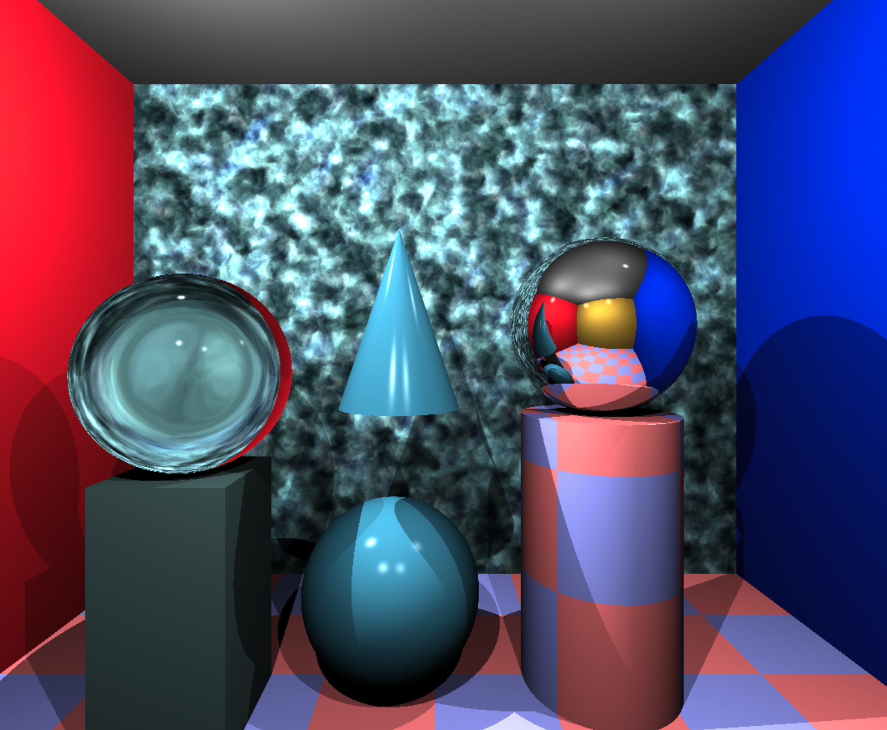
That all images in this writeup were generated directly by my solution code or provided by the course staff (exception: art contest submissions may pass through intermediary software like GIMP)
That no other student has viewed my writeup explanations or my writeup images
That my solution code is my own work; particularly that my solution was not copied from any other student's solution code, and that no other student copied their solution directly code from me
That I did not discuss assignment specifics or view the solution code of any other student besides that of my (optional) partner
That I have followed all other course collaboration and course plagiarism policies as written on the course website.
Beiqi Zou (bzou)
Collaborated with: PARTNER NAME HERE (partner-netid-here)
- (1.0) Trace Ray and Calculate Color
- (2.0) Triangle
- (2.0) Sphere
- (2.5) Box
- (2.0) Cylinder
- (3.0) Cone
- (1.0) Shadows
- (3.0) Soft shadows
- (2.0) Transmission
- (1.0) Checkerboard
- (1.5) Phong material
- (1.5) Special material
- (1.0) Custom Scene
- (2.0) Animation
- (0-5) Technical Extensions
- (1.0) Art Contest
TraceRay
For the first part of the assignment, I followed the provided
instructions to complete the traceRay and calculateColor
functions.
Triangle
(Your description of your implementation of Triangle goes here...)
The first step is to calculate the surface equation P*N + d = 0. First I calculated surface normal of a triangle given three vertices. Bascially it's the vector product of two edges of that triangle. Hence I created a function called "findSurfaceNormal" given three vertices as inputs, where it first calculated edge vectors and then do the cross product. Then we need to determine the distance d. The distance is simply the projection/dot product between the face normal and one point/vertex on the surface. After we find the surface equation, we can use the function "findIntersectionWithPlane" to determine the length and intersection point. Then we need to check whether the intersection point is in the triangle by using the second method mentioned in the lecture slides (calculating cross products).
Sphere
(Your description of your implementation of Sphere goes here...)
I followed the method mentioned in the slides. After calculating the intersection point, I used N = (P-O)/||P-O|| to find the face normal.
Box
(Your description of your implementation of Box goes here...)
The faces of a box can be determined using face normals and vertices. Since it's an axis-aligned box, there are three face normals (0, 0, 1), (0, 1, 0) and (1, 0, 0), where each of the face normal can corresponds to two vertices pmin and pmax. Hence it can form a box with six faces. Then for each face we can use "findIntersectionWithPlane" to determine the intersection point and length. Then we check whether the intersection point is in the box by subtracting pmin, and then check whether it's in the box length range. If the point is in the box, then we use "chooseCloserIntersection" to find the closest intersection.
Cylinder
(Your description of your implementation of Cylinder goes here...)
I followed the steps in the assignment specification. After calculating a, b, and c, we can find two intersecting points. Then we need to drop non-positive length, and select the closer one. We can find apex using [center + axis * len]. And find the location of intersection point by using "rayGetOffset". If the two conditions in the specification hold, we could find the normal by using the equations in the following image.
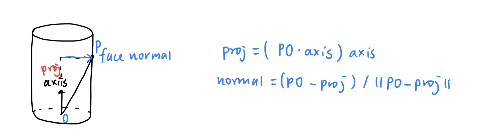
For getIntersectDisc function, we can use findIntersectionWithPlane, and then check whether it's in the circle range. By calculating the dot product between norm and center, we could find the distance of the plane.
Cone
(Your description of your implementation of Cone goes here...)
First follow the steps in assignment specification to calculate a, b, and c. Then we can find two intersection points. Similarly to cylinder, we perform some checks such as positive checking, in range checking, validations, then we find the closest intersection point. Determine the normal using the steps in the image.
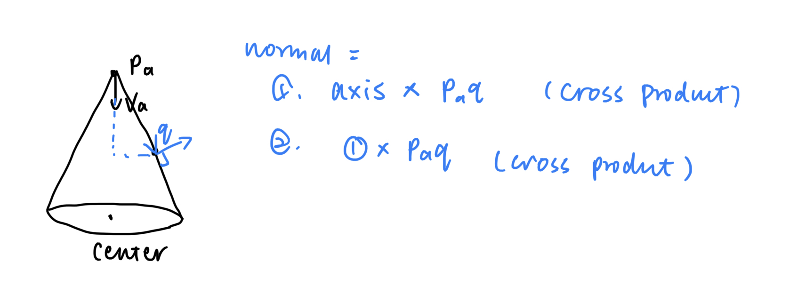
Shadows
(Your description of your implementation of Shadows goes here...)
First create a ray, where the ray's origin equals to pos and the direction is normalize(lightVec). We can use rayIntersectScene to find the intersection point of this lightVec to the object. Then we could check whether length(lightVec) > the distance to the intersection point. If so, then this point is in shadow. Otherwise it's not.
Soft shadows
(Your description of your implementation of Soft shadows goes here...)
Left figure shows how to generate offsets, right figure shows the idea of soft shadow.
I used a double for loop to loop through all the points. For example, for a point (1/N, 0), we can apply offsets in range [0, 1/N]. After getting x and y, we convert x and y using sphere coordinates (follow the equtaions in the link given). Then we can obtain the sample. By calling pointInShadow function to determine whether a lightVec is in shadow, we create a variable to count the number of light vector that are not in shadow. Finally we return the fraction of light that is not in shadow.
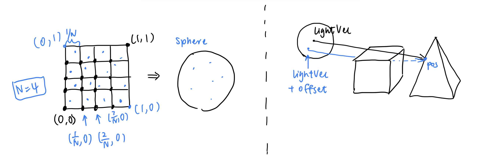
N = 25:
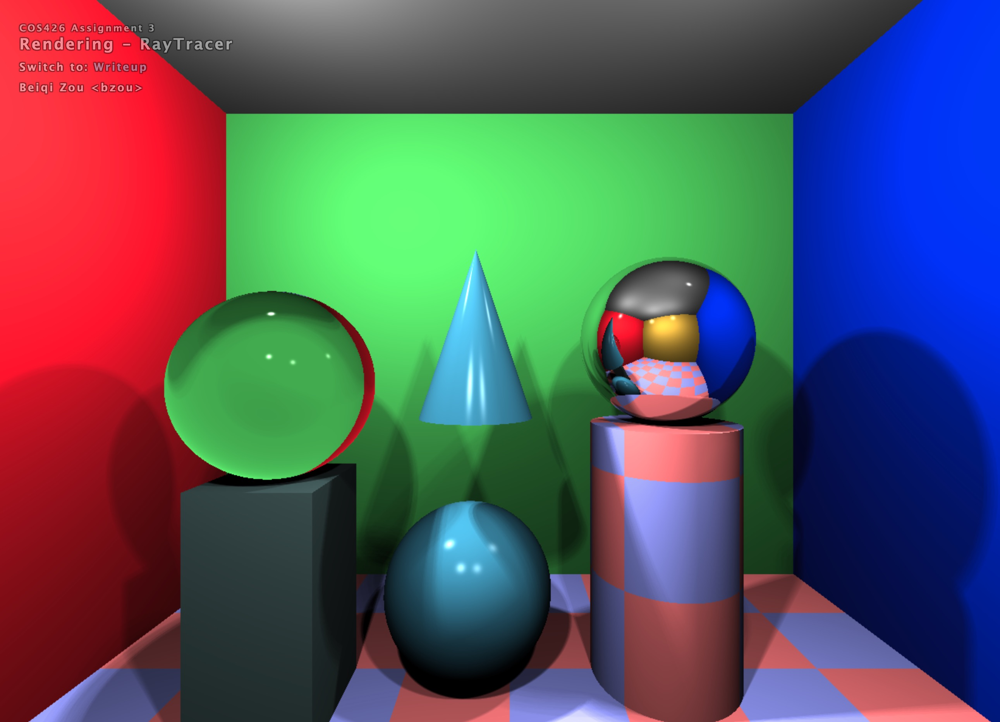
Transmission
(Your description of your implementation of Transmission goes here...)
T = (eta * cos(theta_i) - cos(theta_r))N - eta * L
We can obtain theta_i by calculating the dot product between direction and normal vector. By snell's law, we know that sin(theta_r) = eta * sin(theta_i). Then we can obtain both cos(theta_i) and cos(theta_r). L is the direction given. During coding, we need to reverse the above equation by multiplying -1.
Checkerboard
(Your description of your implementation of Checkerboard goes here...)
We only need to check whether the sum of location is odd or even. If it's even, the block is color1; else the block is color2. By multiplying a scaling factor, we can adjust the checkerboard size.
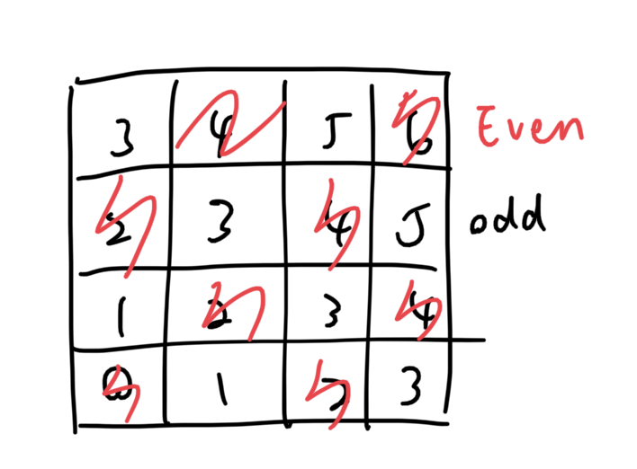
Phong material
(Your description of your implementation of Phong material goes here...)
Phong model has the following equation:
I_s = K_s (V * R)^n I_L
We can obtain R by using reflect() function provided, since it's the reflection of L w.r.t N. Note that we need to apply -1 to the reflected result to get the correct direction. Then the intensity is the dot product of eye vector and R, its power is mat.shiness. By multiplying light.intensity divided by attenuation, we can get the result.
Special material
(Your description of your implementation of Special material goes here...)
I followed the steps here: https://www.shadertoy.com/view/Msf3WH.
I set the color using: vec3 col = vec3(rand1 * n, rand2 * n, n), where n is the noise, rand1 and rand2 are random float in range [0, 1]. 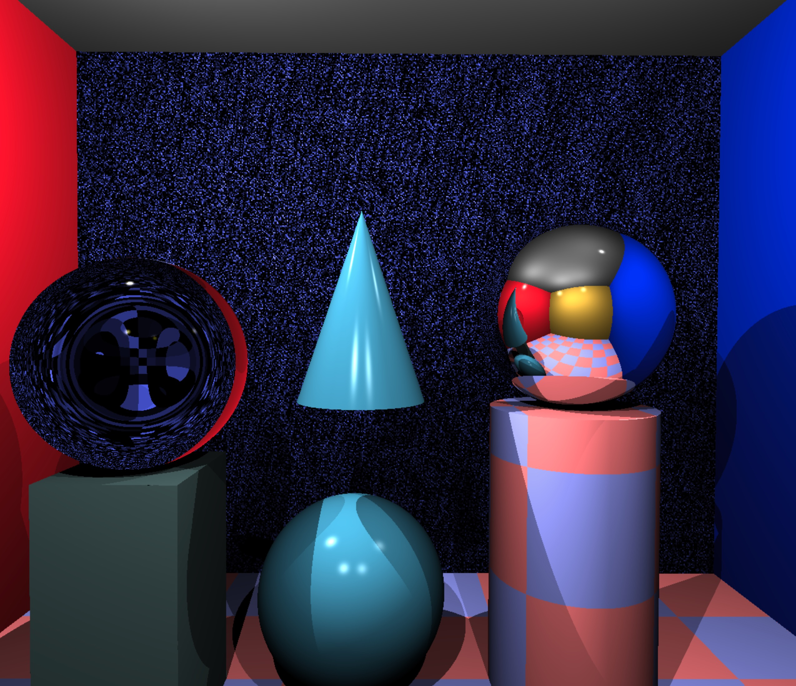
Custom Scene
(Your description of your implementation of Custom Scene goes here...)
Animation
(Your description of your implementation of Animation goes here...)
I used the code here: https://thebookofshaders.com/13/. Basically it uses fBm to warp a space of a fBm by using the following:
f(p) = fbm(p + fbm(p + fbm(p)))
For time variable, I used float(frame) * 0.1.
Technical Extensions
(Your description of your implementation of Technical Extensions goes here...)
Art Contest
Remember to appropriately label your submission! If you are submitting a google drive link to a movie or animation, give the tag an id that matches the format we for your labeled art project images. (Your description of your implementation of Art Contest goes here...)
(Using animation part) I used the code here: https://thebookofshaders.com/13/. Basically it uses fBm to warp a space of a fBm by using the following:
f(p) = fbm(p + fbm(p + fbm(p)))
For time variable, I used float(frame) * 0.1.
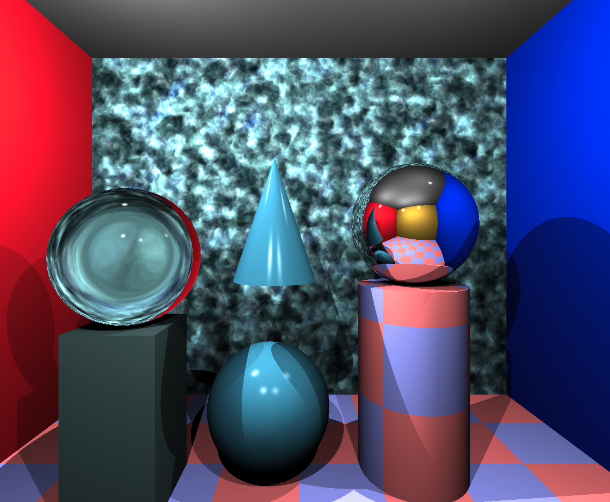